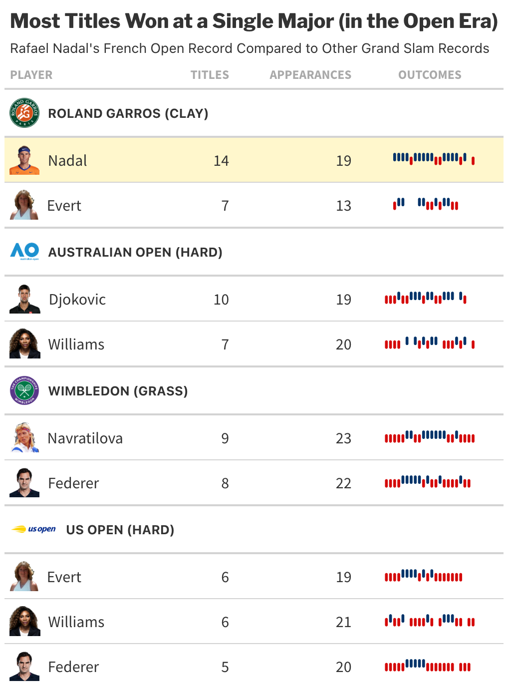
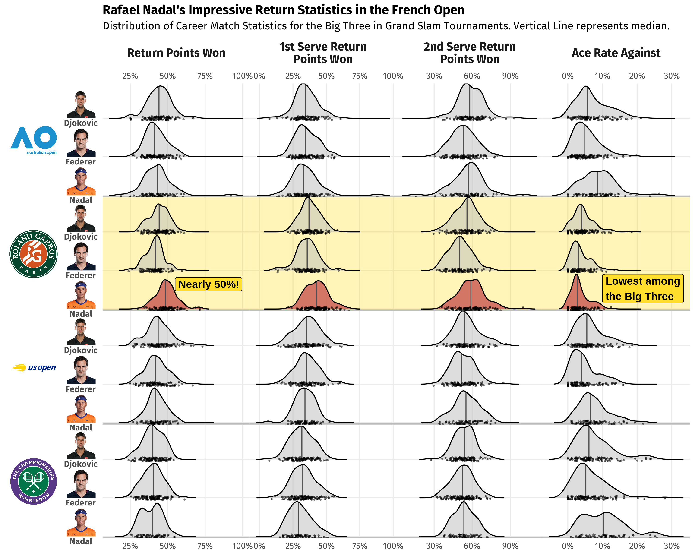
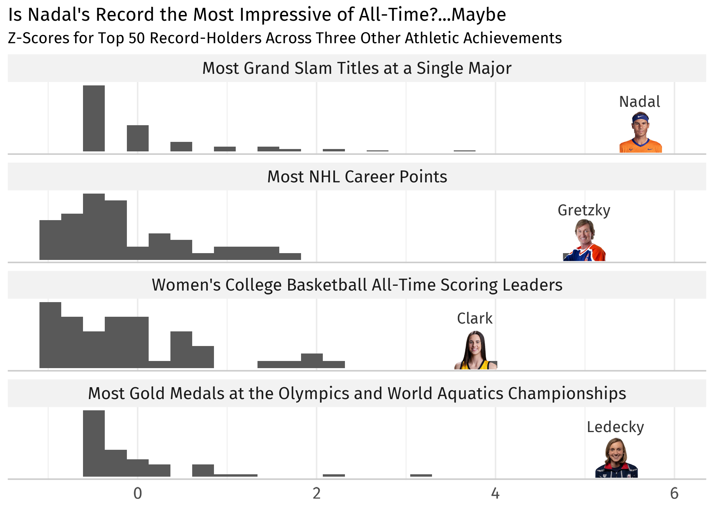

Quantifying Rafael Nadal’s Dominance with French Open Data
Rafael Nadal’s French Open Dominance
The French Open, also known as Roland Garros, began this week in Paris, France and will culminate in championships held on June 8th and 9th. It is the second of four major tennis tournaments collectively known as the Grand Slam—the Australian Open, Wimbledon, and U.S. Open being the other three. A big question heading into the tournament was whether Rafael Nadal would compete. He has won it 14 times in his career, the most of any individual player, male or female. In this blog, we try to identify the je ne sais quoi that earned him the nickname, “King of Clay”, and explore the data behind his record-breaking French Open success.
French Open Titles
In 18 career appearances, Rafael Nadal has won the French Open 14 times. The next closest male is Björn Borg with six titles. On the female side, Chris Evert holds the record with seven.
Taking our scope beyond just the French Open, no player, male or female, has 14 singles titles at any one Grand Slam tournament. Aside from Nadal, the only active player in the table below is Novak Djokovic, who holds the closest active record with 10 Australian Open titles. Already playing the tournament 19 times, career longevity becomes a challenge if he were to unseat Nadal as the winningest player at a single major tournament.
Among these tennis greats, Nadal’s stretch of success at the French Open is truly eye-catching.

What makes him so dominant?
A unique aspect of the French Open is its surface. Rather than the traditional blue or green hard court (typically concrete) you’re likely to find at a nearby park or sports complex, Roland Garros features an orange-red surface made of densely packed clay. This surface results in a distinct gameplay that rewards defensive play and makes the ball behave differently off the bounce compared to other surfaces. Another challenge posed by clay is the reduced friction between the shoe and the surface, requiring players to slide into position to strike the ball as they move around the court.

Many experts attribute Nadal’s success at the French Open to his athleticism and emphasis on power and spin off the racket. These characteristics, accentuated by the clay court, allow him to hit returns other players cannot and to remain on the offensive even while his opponent is serving.
The “Big Three”—comprised of Novak Djokovic, Roger Federer, and Rafael Nadal—is the nickname for the trio considered the greatest male tennis players of all time. Even among this group Nadal’s return statistics stand out. In French Open matches, he wins an average of 49% of return points compared to Djokovic’s 44% and Federer’s 41%. Winning nearly 50% of return points is unheard of, especially when top players are expected to win 70% or more of the points in which they are serving.
Additionally, Nadal’s median Ace Rate Against—a measure of how often a player is unable to touch their opponent’s serve—is just 2.7% at the French Open, the lowest among all three athletes at any Grand Slam. To take the opponent’s serving advantage away this dramatically, it’s clear evidence of Nadal’s impressive upper hand on the clay court.
The figure below compares match statistics for Djokovic, Federer, and Nadal at Grand Slam tournaments across their respective careers.

The Greatest Records of All Time
The data so far shows that no tennis player has dominated one of the majors the way Nadal has at the French Open, but how does his record compare to non-tennis records? What methodology could we use to compare apples and oranges, or perhaps, tennis balls, basketballs, and hockey pucks?
There are a number of ways to approach any given problem in the field of Data Science. In fact, for a field known for its quantitative rigor, there are many aspects that allow for creativity. Designing data visualizations, weaving insights into a cohesive story, or, in our case, developing a methodology for comparing athletic achievements are all ways in which creative thinking is an asset.
For our problem, we could visualize the difference relative to the next best record-holder or compare the length of time previous records were held. These are interesting ideas, but really only compare two data points head-to-head. With sample size in mind, let’s try to contextualize how far out of the ordinary Nadal’s 14 championship wins are and do the same for a couple other sports achievements.
The number of wins at a tennis tournament are of a different magnitude than, say, the number of career points in basketball. To make things fair, we need to standardize. The “standard score”, sometimes called a “Z-score”, is a way for us to compare data measured on different scales. It can be calculated by taking each data point, \(x\), subtracting the average, \(\bar{x}\), of data points from the same sample, and dividing by the standard deviation, \(S\), a measure of how much variability there is in our data. Written in equation form, we have: \(z = \frac{x - \bar x}{S}\).
As an example, on the top 50 list of most grand slam titles at a single tournament, the average is 2.2 with a standard deviation of 2.1. Therefore, the z-score for Rafael Nadal’s French Open record is:
\[ z = \frac{14 \space titles - 2.2 \space average}{standard \space deviation \space of \space 2.1} = 5.6 \]
Z-scores are unitless, meaning we can calculate and compare these for records from different categories, even different sports. It is important, however, to know that z-scores can be susceptible to skewed data and to confidently say if one is more extreme than another, we may need to account for distributional characteristics before standardizing them. We will save those techniques for another time, but for now, we can say with certainty that a positive z-score means a data point is atypically high relative to the population from which it comes. Conversely, a negative one means it is unusually low compared to its population. In summary, the further a z-score is from zero, the further it is from average.
In the chart below, we compare Nadal’s record with three notable records. Namely, the National Hockey League career points record set by Wayne Gretzky, the recently-set women’s college basketball scoring record by Caitlin Clark, and Katie Ledecky’s ever-growing count of gold medals at the Olympics and World Championships.
It’s clear that all four athletes’ achievements stand far beyond the competition. Nadal’s 14 titles put him farthest from average of these four records, but the right-skewed distributions make this an imperfect comparison. Further analysis could include exploring measures that are more robust to skew and outliers.

What’s next?
Is Nadal’s record of 14 titles at a single Grand Slam tournament the most impressive athletic feat of all time? One could certainly argue it is. Can it be broken? Only time will tell. As we’ve seen, even among tennis legends like Serena Williams, Roger Federer, and Novak Djokovic, Rafael Nadal stands alone more than 5.6 standard deviations above the average. Perhaps if a young, up-and-coming player can perfect power, spin, and mobility on clay, they could make a run for his French Open record. That is, if they can also remain at the top of their game over a multi-decade career, the way Rafael “The King of Clay” Nadal has. ¡Vamos Rafa!
Learn Data Science at Flatiron
Unlocking the power of data goes beyond basic visualizations. Our Data Science Bootcamp dives deep into data visualization techniques, alongside machine learning, data analysis, and much more. Equip yourself with the skills to transform data into insightful stories that drive results. Visit our website to learn more about our courses and how you can become a data scientist.